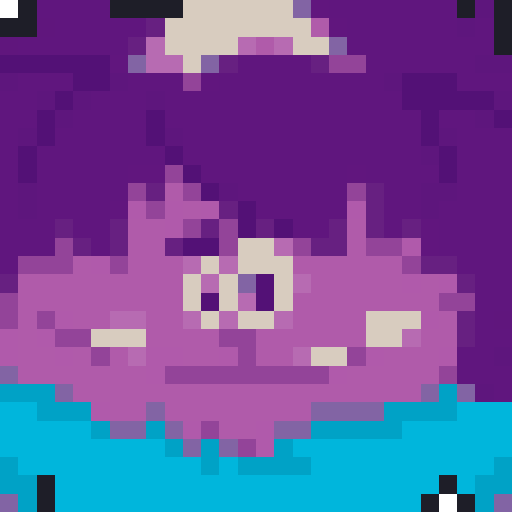
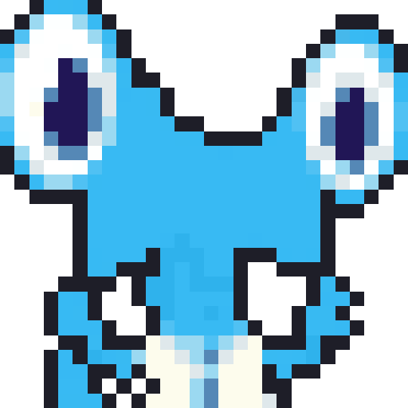
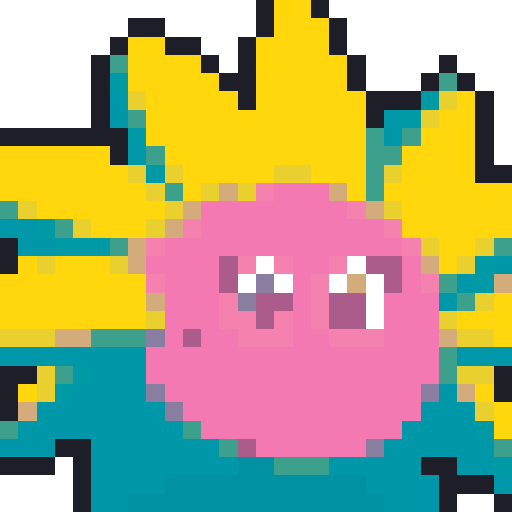
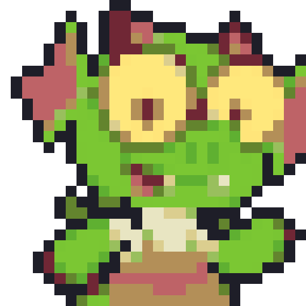
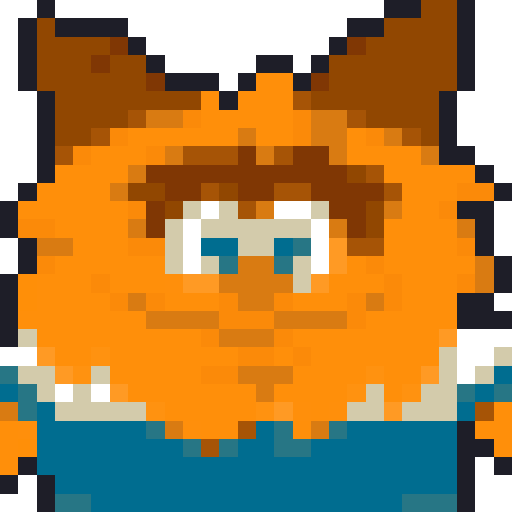
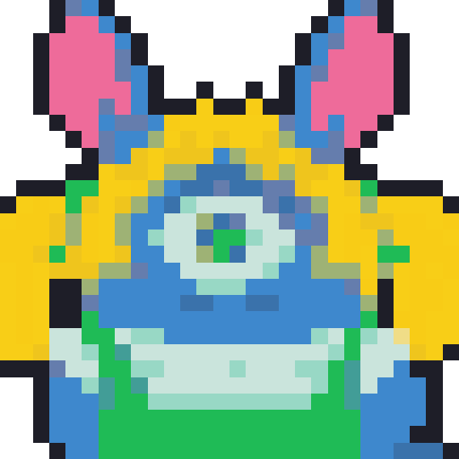
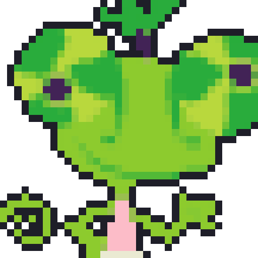
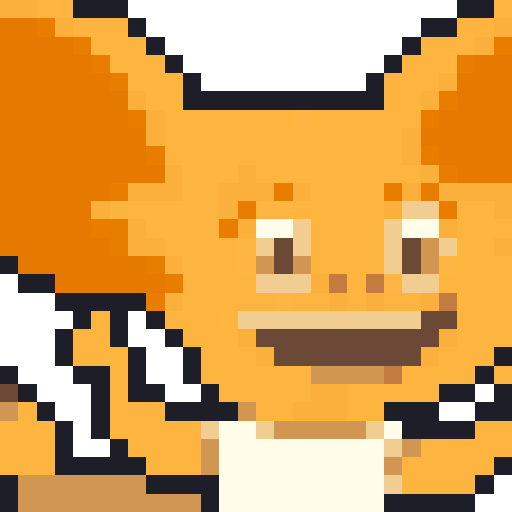

BEELINE
Equivalent Fraction
Move your numerator and denominator tokens, mark the simplest equivalent fraction, connect four in a row to win.
Bot: Medium
Game variant
Choose your avatar

Grogg

Alex

Winnie

Lizzie

Ralph

Nellie

Cammy

Max
Bot difficulty
You go first. On your first turn, place one token on the Numerator row and one on the
Denominator row below — that builds a fraction (e.g. 6/8). The grid above only shows
fractions in simplest form, so simplify yours (6/8 = 3/4) and mark the matching cell —
any fraction that reduces the same way marks that same cell. From then on, each turn you move
one of your two tokens to a new number and mark the new fraction's simplified cell. If
that cell is already claimed, you don't get to mark it — your turn just ends, no penalty beyond that.
You also can't move back to a position you've already visited this game — that would just undo progress
instead of making a new one. There's no dice involved — every move is your own choice. Whoever connects
four in a row (horizontal, vertical, or diagonal) first wins — that's a BEELINE! The bot
always simplifies correctly, but how far ahead it plans changes with difficulty.